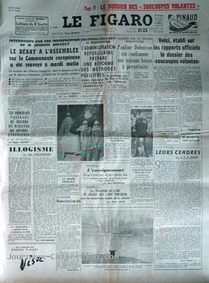
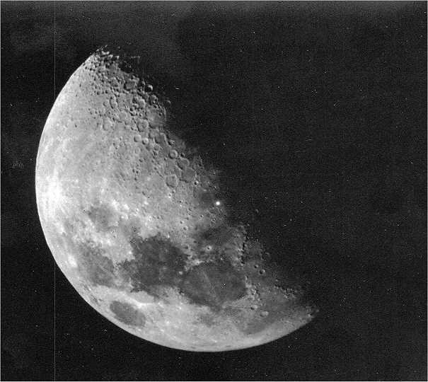

Le Figaro n° 2862 du 21, titrant : Voici, établi sur les rapports officiels le dossier
des "soucoupes volantes"

A Gjersjoen Bridge (Norvège), M. Trygve, MmeBuflot et 1 voisin voient 1 objet s'élever derrière une colline, osciller au-dessus
d'un lac, suivre leur automobile et s'arrêter devant eux à ras du sol. Ils font halte et ressentent des picotements
jusqu'à ce que l'engin décolle verticalement. Une montre cesse de fonctionner et de nombreuses personnes
témoigneront du fait que la peinture de l'automobile était passée du beige foncé au vert brillant FSR 56, 5.
À Londres (Angleterre), des milliers de personnes observent un
objet circulaire et de couleur blanche émettant ou réfléchissant une forte lumière. Certains le décrivent se
déplaçant à une vitesse énorme tandis que d'autres le voient pratiquement statique. L'objet est aussi
détecté au radar à
61000pieds. Une 1ʳᵉ explication évoque un ballon, mais une
vérification montre qu'aucun ballon de cet n'a été lâché
d'Angleterre. Finalement, il est vérifié qu'un ballon du
projet Moby Dick lâché 6 jours plus tôt par l'USAF depuis la
base de Holloman (USA) avait quitté sa course et au lieu de
retomber au sol avait continué à voler vers l'Europe
StratoCat.
Le point lumineux photographié par Stuart le 15

En Oklahoma, l'astronome amateur Léon Stuart teste son nouvel
appareil photo. Il prend des clichés de la Lune, quand
soudain, il aperçoit sur elle un point très lumineux. Sur la pellicule, le point est bel et bien là, au sud-est du
grand cratère Pallas. Pour Stuart, aucun doute : il s'agit d'un impact de météorite Le Dr. Léon Stuart est probablement le 1er et le seul être humain dans l'histoire à
avoir photographié un impact sur la Lune. En effet, un évènement de cette importance a la chance d'arriver à
peut prêt une fois tous les {{100000|number}} ans.
Compte-rendu d'observations personnelles du lieutenant
Jean Demery, de la base aérienne 107, à Villacoublay.